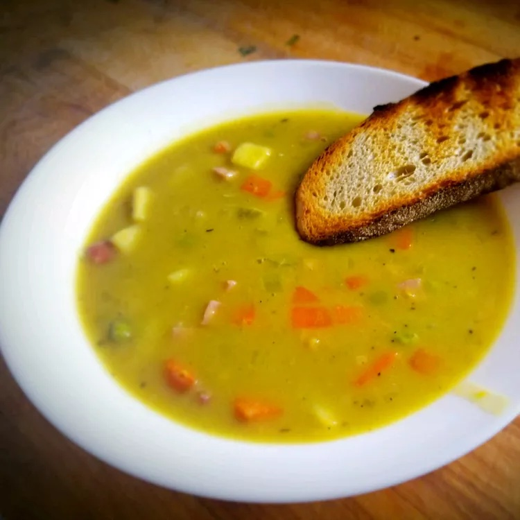

Split Pea Soup

Description
Split pea soup is a healthy and heartwarming dish that is packed with nutrients. High in protein and fiber, split pea soup is a delicious way to nourish your body
Ingredients
- 2 ¼ cups dried split peas
- 2 quarts cold water, plus more as needed
- 1 ½ pounds ham bone
- 2 onions, thinly sliced
- ½ teaspoon salt
- ¼ teaspoon ground black pepper
- 1 pinch dried marjoram
- 3 stalks celery, chopped
- 3 carrots, chopped
- 1 potato, diced
Steps
- Place peas in a large stockpot and cover with several inches of cold water; let soak, 8 hours to overnight. Drain, rinse, and return peas to the pot.
- Add 2 quarts of cold water, ham bone, onion, salt, pepper, and marjoram to the stockpot. Cover, bring to a boil, and simmer for 1 1/2 hours, stirring occasionally.
- Remove ham bone; cut off meat, dice, and return meat to soup. Add celery, carrots, and potatoes. Cook slowly, uncovered, until vegetables are tender, about 30 to 40 minutes.